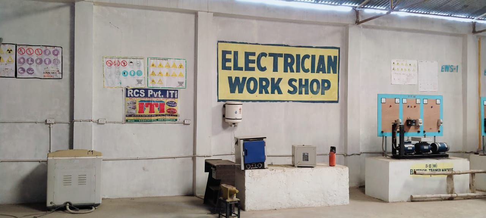
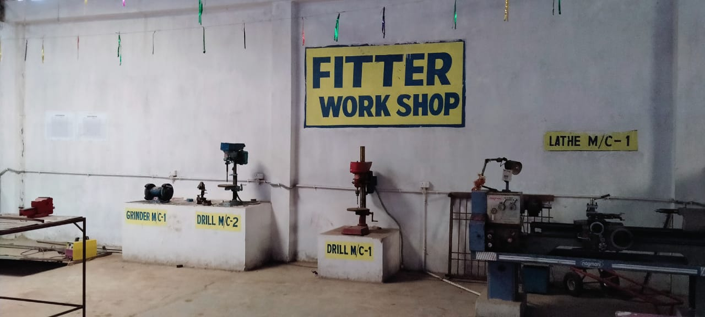

Power Trades Duration: Two Year Minimum Qualification Eligibility:
10th Passed under 10+2 System with Science & Maths Trade Type: Engineering
ITI trade Electrician is powered by NCVT. ITI trade Electrician is a job oriented trade ITI trade Electrician is suitable for government job and private job. This ITI trade Electrician is very powerful for self-empowerment. This ITI trade Electrician is perfectly design to fulfill industrial requirement of Indian Industries as well as International industries.

Electricians have a wide scope of Employability ranging from self-employment, contractual employment to Industrial jobs.
After successful completion of this course, Electricians can aspire to become Electrical Contractors by acquiring the ‘B” licence from the Electrical Licence Board.
They can set up their own Rewinding and servicing of Domestic Equipment shop.
Job opportunities are wide open in Defence, Railways, Transport, Ship Building, Electricity Board, various Industries etc
They can also go for further higher studies after successful completion of course.
Students who have completed this course have found employment in the following areas:
Service/Maintenance Technician for domestic appliances in Reputed Companies
Winder of Electrical Motors in winding shop
Contractor for domestic wiring and industrial wiring
Armature winder of Electrical fans and motors
Electrical appliance repair in electrical shops
Indian Railway (Asst. Driver, Tech. Gr. III, Appr. Technician)
Local Electricity Board
Assembler of Electrical control Gears
Telephone Department
Installation and Testing division of Auditorium and Cinema Hall
Factories
As Instructor in Govt./Private ITI/ITC
Merchant Navy
Indian Air Force
Self-Employment in Service Centre
Syllabus for ITI Trade Fitter:
Capital Goods & Manufacturing
Trades Duration: Two Year Minimum Qualification Eligibility:
10th Passed under 10+2 System with Science & Maths Trade Type: Engineering
ITI trade Fitter is powered by NCVT. ITI trade Fitter is a job oriented trade ITI trade Fitter is suitable for government job and private job. This ITI trade Fitter is very powerful for self-empowerment. This ITI trade Fitter is perfectly design to fulfill industrial requirement of Indian Industries as well as International industries.

Fitters have a wide scope of Employability ranging from self-employment, contractual employment to Industrial jobs. On successful completion of this course, the candidates shall be gainfully employed in the following industries:
Production & Manufacturing industries.
Structural Fabrication like bridges, Roof structures, Building & construction.
Automobile and allied industries
Service industries like road transportation and Railways.
Ship building and repair
Infrastructure and defence organizations
In public sector industries like BHEL, BEML, NTPC, etc and private industries in India & abroad.
Self employment
International Comparability
Existence of any official document suggesting the comparability of the qualification with the qualifications in other countries is not known.
However, ITI passed out trainees are getting employment in many Gulf countries, European countries, Australia, New Zealand, Singapore etc.
Progression Pathway
Can appear in 10+2 examination through National Institute of Open Schooling (NIOS) for acquiring higher secondary certificate and can go further for General/ Technical education
Can take admission in diploma course in notified branches of Engineering by lateral entry
Can join as semi-skilled worker in the industry and can become supervisor after doing part-time diploma in relevant branch of Engineering
Can join Apprenticeship programme in different types of industries leading to National Apprenticeship certificate (NAC) after which they will be employed in industry as skilled worker and can become supervisor after doing part-time diploma in relevant branch of Engineering
Can join Crafts Instructor Training Scheme (CITS) in the relevant trade after which they will be employed in ITI/ Vocational Training Institute as instructor